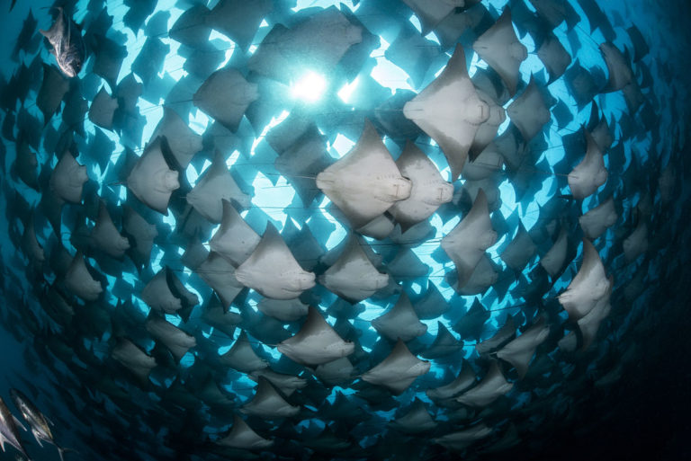

Лучшие подводные фото года
Престижный конкурс подводного фотоискусства, посвященный красотам океана и организованный Underwater Photography Guide, объявил победителей 2018 года. В конкурсе, который проводится вот уже седьмой год, участвовали лучшие фотографы из разных стран, а новые технологии и методы фотосъемки повысили качество снимков на новый уровень, позволив запечатлеть самые невероятные красоты подводного мира.

В конкурсе участвовали представители 70 стран, а победителем был объявлен фотограф из Великобритании Дункан Мюррел (Duncan Murrell) за свою волшебную фотографию, на которой ему удалось поймать трех взрослых особей морских дьяволов (рыба-манта), которые резвились в брачном танце в бухте Хонда на Филлипинах. Мюррел умело использовал мягкий рассеянный свет, подчеркнув плавные движения элегантных гигантов. По словам победителя, ему удалось заснять редко наблюдаемое брачное поведение двух самцов, преследующих одну самку.